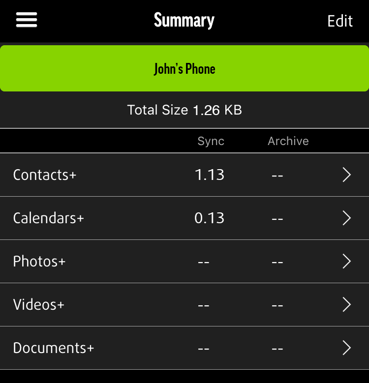

SICHERT MEIN MEEM?

Sobald Sie Ihre PIN bestätigt haben, beginnt MEEM mit der Sicherung der Inhalte auf Ihrem Telefon. Während des Sicherungsvorgangs bleibt Ihr Gerät voll einsatzbereit, auch wenn die MEEM-App im Hintergrund läuft. Die App wird während des Sicherungsvorgangs mehrere Phasen durchlaufen, die oben auf dem Bildschirm angezeigt werden:
- Bestätigung der Daten: MEEM bestätigt die Gesamtmenge der Daten auf Ihrem Gerät und sucht nach neuen Daten und gesicherten Daten, die Sie gelöscht haben. Zunächst erscheint oben im Bildschirm „Daten bestätigen“ (A), gefolgt von einem Zähler (B). Es wird angezeigt, welche Datenkategorie gerade überprüft wird und ob die Daten auf dem Handy oder dem MEEM überprüft werden. Wird beispielsweise angezeigt „Kontakte auf dem Handy ### / ####“ (B), überprüft die App die Kontakte auf Ihrem Handy, um zu bestätigen, was zur Sicherung vorhanden ist. Wird angezeigt„Kontakte auf dem MEEM ### / ####“, überprüft die App die Kontakte auf dem MEEM-Kabel, kopiert neue Kontakte und löscht seit der letzten Sicherung von Ihnen gelöschte Kontakte auf dem MEEM-Kabel. Dieser Vorgang wird für sämtliche Kategorien durchgeführt. So können Sie den Fortschritt des Sicherungsvorgangs verfolgen.


- Abschlussvorgang: MEEM schließt den Sicherungsvorgang ab und wird bald beendet
- Nachdem der Sicherung abgeschlossen ist, erscheint oben auf dem Bildschirm „Home“.

Tippen Sie auf das Menü-Symbol und danach auf „Ihre Daten“, um sich die gesicherten Inhalte anzusehen. Im Bereich
„Ihre Daten“ können Sie auf eine der Kategorien tippen, um die jeweiligen gesicherten Inhalte anzusehen. Die MEEM- Datensicherung läuft schrittweise ab. Wenn Sie Ihr Handy während des Sicherungsvorgangs vom MEEM-Kabel trennen, wird der Vorgang bei der nächsten Sicherung dort fortgesetzt, wo Sie ihn zuvor beendet haben. Nach der ersten Datensicherung werden nur noch neue und veränderte Daten auf das MEEM-Kabel übertragen, weshalb die darauf folgenden Datensicherungen sehr schnel gehen.
